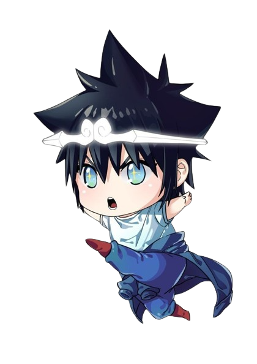

Age:
Unknown 999+
Nationality:
North Korea
Occupation:
Formally Gaia's Gurdian
Hobbies:
Martial Arts & Eating
SUN WUKONG STATS
Strength:∞ ∞ ∞
Speed: 999+
Intelligence: 600
Endurance:∞
Luck: 500
JIN MORI STATS
Strength: 8
Speed: 9
Intelligence: 7
Endurance: 8
Luck: 4
RELATIONSHIPS
- Jin TaeJin:
Mo-Ri's adoptive Grandfather. He both created and taught Mo-Ri the Renewal Taekwondo style.
- Dan Ah-An:
Dan Ahan is the adoptive sister of Dan Mori and a student at Apricot Flower High School, one of the many schools that began stratifying Charyeok's talents 17 years after RagnarÖk.
- Park TaeJin:
Park Taejin is the biological daughter of Park Mubong and Judge P and the adopted daughter of Dan Ahan and Jin Mori.
- Uma:
Mo-Ri's "brother" from his previous life as the Monkey King. They were sworn brothers and fought together for possibly as long as centuries.
